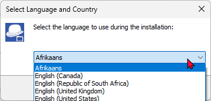
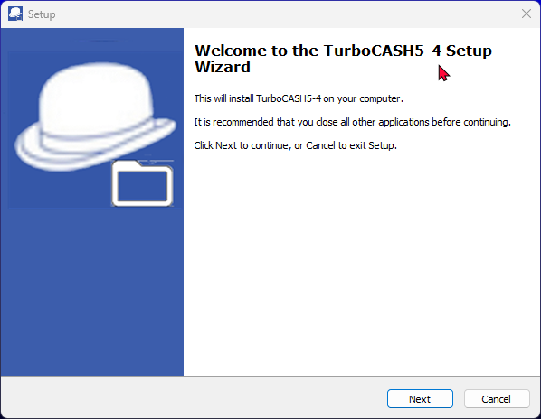
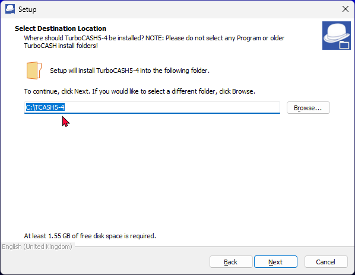
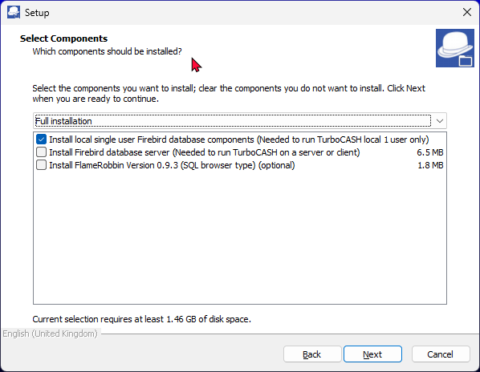
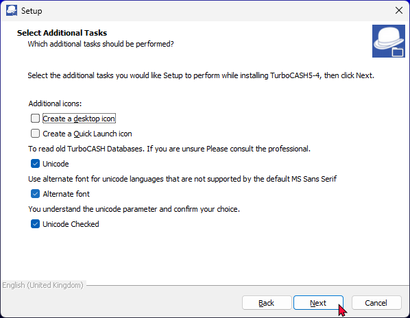
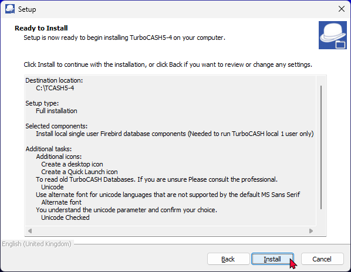
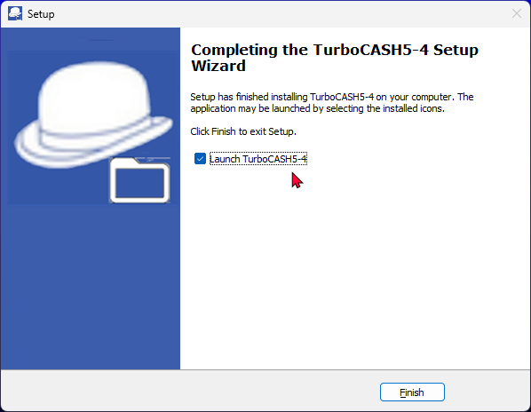

Install TurboCASH5-4 - Single user
TurboCASH5-4 Installation Guide
The TurboCASH5-4 installation process takes only a few minutes. During this process, you will be required to select several critical setup options. The most important of these include specifying your regional country profile, choosing your primary interface language, and accepting the license agreement.
Before running the executable, please review the vital structural requirements below regarding existing folders, Unicode settings, and alternative font switches.
Important Note for Existing TurboCASH Users : Installing TurboCASH5-4
If you are currently using an older legacy edition of TurboCASH (such as TurboCASH3, TurboCASH4, TurboCASH 4.0.0.969, TurboCASH5, TurboCASH5-2, or TurboCASH5-3), it is crucial to understand that TurboCASH5-4 is entirely new software architecture—it is not an inline update or a patch.
Therefore, you must not install TurboCASH5-4 into an existing folder space. Trying to mix new application files with older code libraries will cause deep operational conflicts. For example, forcing an installation into an older folder path will trigger severe initialization failures, such as:
Application Error
Exception EReadError in module rtl150.bpl at 00074FF4.
Error reading TGlobalDataObject.Registration.PluginsChecksum: Property PluginsChecksum
The "Folder Exists" Warning
When running the setup wizard, if you select a directory path that is already on your system, the installer will display this explicit warning window:
Folder Exists
The folder:
C:\TCASH5
already exists. Would you like to install to that folder anyway?
You must click NO. Click No and type or browse to a completely clean, distinct installation directory (e.g., C:\TCASH5-4). This ensures that your fresh database frameworks and interface libraries are isolated from legacy configurations.
Integrated Unicode & Font Settings
The TurboCASH5-4 installation script includes automated parameters to pre-configure your global text layout and character-set environment directly from the setup wizard. This completely removes the need to manually hunt down and modify configuration script data after the installation is complete.
These options directly control the global tcash.ini layout settings located in your installation's root directory. During setup, you can dynamically control three major parameters based on your operational needs:
1. Unicode Support Status (nounicode)
Controls whether the application engine uses deep Unicode character translation logic to display multilingual data safely.
- Enable Unicode Support (nounicode=FALSE): [RECOMMENDED] Allows TurboCASH5-4 to accurately process and handle wide-range character sets from multiple global languages, ensuring proper display and data integrity across diverse linguistic regions.
- Disable Unicode Support (nounicode=TRUE): Restricts character handling to the default legacy local operating system character page. Special characters or localized accents from other regional languages may not render correctly.
2. Alternate Font Override (ALTFONT)
Works in tandem with your Unicode selection to enforce correct visual rendering across various Windows interface configurations.
- Enable Alternative Font Override (ALTFONT=TRUE): This forces the TurboCASH5-4 user interface components and report fields to utilize highly compatible TrueType alternative fonts. Enforcing this parameter prevents localized text strings, specific mathematical layouts, or non-English alphabets from rendering as unreadable blocks or garbled characters on your screens.
3. Initialization File Action (tcash.ini Management)
If the installer detects settings from a previous environment, it gives you direct options to manage your initialization preferences:
- Update Preferences: Rewrites the text values inside the tcash.ini file to match your new Unicode and Alternate Font selections.
- Retain Preferences: Preserves the underlying initialization structure while maintaining your target character formatting options.
Microsoft SQL Server (MSSQL) Support
In addition to the native Firebird 2.1 engine, TurboCASH5-4 includes built-in architecture to support MSSQL (Microsoft SQL Server) database types. This allows larger organizations to host their accounting data on corporate SQL server clusters for enhanced backup management, data scaling, and enterprise infrastructure integration.
After installing TurboCASH5-4, MSSQL databases can be created. Because the software is optimized for standard users, the initial setup automatically defaults to the recommended automated path ("Let TurboCASH help you to create a Set of Books?"). To create or connect an MSSQL-based Set of Books, you must explicitly use the Advanced option after the software is installed.
Documentation: For an in-depth visual walkthrough, explicit security permission steps, and network user credential mapping for SQL Server layouts, see the official online documentation: Create Set of Books (Advanced - MSSQL).
TurboCASH5-4 Installation Process
The TurboCASH5-4 installation process should only take a few minutes. During this process you may need to select a few options. The most important options, you may need to select is your country and language, reading and accepting the licence agreement.
Install TurboCASH5-4 single-user
|
|
The TurboCASH5 should, by default, install in the TurboCASH5 directory (e.g. C : / TurboCASH5. If you choose to install TurboCASH5 in different directory or folder on your system, DO NOT install TurboCASH5 in any Program files directories. If you wish to install TurboCASH5 on a device that has a Solid State Drive which is small, e.g. 32GB as the C: drive, you need to select the D: drive that is bigger in size. |

|
|
This documentation will describe to do a standard installation to run TurboCASH5 locally on one computer for 1 user only.
|

To install TurboCASH5-4 single-user:
- Prerequisite: Installer Downloaded. Locate your downloaded TurboCASH5-4 executable installer file on your computer, select it, and open it. The “Select country and language” initialization screen will display on your screen.

- Select your country and language. Click OK. The “Welcome to the TurboCASH5-4 Setup Wizard” screen is displayed: Select your specific country and language profile from the available dropdown options, then click OK. The wizard will process your choice and display the “Welcome to the TurboCASH5-4 Setup Wizard” splash screen.

- Click Next to move past the introductory welcome text. The formal “License Agreement” screen will load next.
- Read through the end-user legal agreement carefully. If you agree with the terms, rules, and conditions of the software framework, select the “I accept the agreement” radio button option, then click Next. The “Select Destination Location” routing screen will be displayed.

- The default path is TCASH5 on your system's default drive, (e.g. C:/TCASH5-4). The installer targets a root layout directory on your default system drive (typically C:\TCASH5). If you need to route it elsewhere due to small solid-state drive constraints (e.g., changing to C:\TCASH5-4), click the Browse button to select a distinct storage path. Remember: DO NOT select a Program Files directory.
|
|
When installing TurboCASH5-3 into an existing folder, you may see the following warning message: Folder Exists If you click Yes, you may encounter problems. It is strongly recommended that you click "No" and choose a different installation directory. Installing into an existing TurboCASH folder (even if it's for a seemingly related version) can lead to software conflicts and errors. These TurboCASH5-4 is a new version is not an update and require a clean installation. Attempting to force an installation over an older version will trigger database errors, corrupt file paths, and cause critical software conflicts. TurboCASH5-4 is a completely fresh installation archetype, not an inline update patch, and requires a completely clean, empty directory. |

|
|
By default, the setup wizard routes the installation to a standard path on your system drive (e.g., C:\TCASH5). If you need to change this path, you can click on the Browse button on the "Select Destination Location" screen. This opens the “Browse For Folder” screen, allowing you to manually navigate to and select any alternative folder or directory path on your system. This customization is particularly important if you are installing TurboCASH5-4 on a compact device that features a small Solid State Drive (SSD) as the primary system drive (for example, a small 32GB C: drive). In these hardware environments, it is highly recommended to click Browse and select a secondary D: drive (or any larger storage partition) that has more available space to prevent system storage exhaustion. Reminder: No matter which drive partition you choose, do not install the application inside any "Program Files" or "Program Files (x86)" directories to avoid Windows security and read/write conflicts. |
- Clicking Next advances you directly to the “Select Components” configuration matrix.

- A list of the components will be displayed. Select or deselect (remove the tick) for the following options, if necessary: A list of operational modules will display on the screen. Select or deselect components by clicking their corresponding checkboxes to match this local single-user profile:
- Install local single user Firebird database components – [MANDATORY] If you are installing TurboCASH5-4 for the first time, you must ensure that this checkbox is ticked. This installer option installs the necessary local Firebird database components (including client DLLs and required background libraries) directly onto your system. These components are absolutely mandatory to communicate with and run your relational accounting data files (Sets of Books) locally.
|
|
Important Access Clarification: Selecting this single-user local installation component does not limit your ability to have multiple people work on your data within a Set of Books. While it installs a standalone database infrastructure on your local computer, you can still create, manage, and configure individual access profiles for multiple distinct operators within any given Set of Books by opening the software and navigating to Setup ➔ Access Control. |
- Install Firebird database server (Needed to run TurboCASH5 on a server or client) – [OPTIONAL] Do not select this option for a single-user workstation. This module is reserved exclusively for host servers or client terminals running on a shared network environment.
- Install FlameRobin 0.93 (SQL Browser Type (optional) – This installs the FlameRobin Database Admin software, which is used by advanced users to browse, check, and edit raw data, as well as inspect the specific data tables and columns of the Sets of Books loaded onto the localhost environment.
|
|
The installation of FlameRobin is entirely optional and is not required to run TurboCASH5-4. Because modifying database tables directly bypasses the software's built-in accounting safeguards and can easily corrupt your financial records, the use of FlameRobin is strictly not recommended for users who have insufficient knowledge and SQL expertise. |
|
|
Installing Firebird and/or FlameRobin at a Later Stage If you decide not to select FlameRobin or the local Firebird components during the primary installation process, or if you need to deploy them at a later stage, the standalone setup executables are securely cached on your hard drive for future use. Bundled Repository Location: The setup executable (*.exe) files for FlameRobin v0.9.3 and Firebird v2.1.3.18185 are automatically extracted into the installs folder located directly within your TurboCASH5-4 root installation directory (e.g., C:\TCASH5-4\installs\). If these tools are required after installation is complete, you can use Windows File Explorer to navigate to this directory at any time and run the setup applications directly from your local disk without needing to re-run the main installer package. |
- Once you have verified that only the local single-user database component is checked, click Next. The wizard will transition smoothly to the “Select Additional Tasks” screen to manage your desktop icons and global Unicode environments.

- On this screen, you can configure shortcut icons and regional environment settings. By default, the language and font options are pre-selected for your convenience, while the shortcut icons are left unselected. Review and modify these selections if necessary:
- Create desktop icon - This will create an icon on your desktop from where you may start or launch the TurboCASH5-4 program.
- Create Quick Launch icon - This will create an icon on your Quick Launch Toolbar on your Windows™ Task bar. You may then start or launch the TurboCASH5-4 program directly from the Quick Launch Toolbar.
- Unicode settings - [Default: Checked] Both the "Unicode", "Alternate font" and "Unicode Checked" and options are selected by default. This enables modern global character support. Select both the "Unicode" and "Unicode Checked" options. This will enable Unicode support. Unicode settings – [Default: Checked] Both the "Unicode Support" and "Unicode Checked" options are selected by default. This enables modern global character support.
- To Enable Unicode support (Recommended): Leave both the “Unicode” and “Unicode Checked” tick boxes selected. This option sets the nounicode=FALSE parameter in the tcash.ini and osf.ini files. This is a critical setting, as it determines how special characters display inside the TurboCASH5 interface, reports, and document layout files across most databases.
- To Disable Unicode support: Uncheck the “Unicode” box, but leave the “Unicode Checked” tick box selected. If the "Unicode Checked" confirmation box is left empty, the installer will block progression and throw a runtime warning message: "Please check and confirm your unicode option."
- Implications of Disabling Unicode: When Unicode is disabled, the system writes nounicode=TRUE to the initialization files. Instead of using universal character mappings, the application is forced to rely entirely on specific Windows active system codepages to render text. For example:
- French (Codepage 1252): Handles standard Western European characters but has strict limitations with unique symbols from other language sets.
- Spanish (Codepage 1252): Manages regional Spanish characters smoothly but struggles with characters from non-Western languages.
- Arabic (Codepage 1256): Supports Arabic characters effectively but will not handle characters from Latin-based languages efficiently.
|
|
We strongly advise consulting with a professional before enabling the Unicode setting. This ensures that you fully understand the implications and make an informed decision. |
|
|
If you intentionally deselect "Unicode Support" for legacy non-Unicode databases, you must leave the "Unicode Checked" box ticked. If "Unicode Checked" is unticked, the installer will block progression with a runtime warning: "Please check and confirm your unicode option." Disabling Unicode sets nounicode=TRUE in your configuration files, forcing the system to rely on regional codepages (e.g., Codepage 1252 for French/Spanish, Codepage 1256 for Arabic). |
|
|
Important Codepage Limitation: Please note that in TurboCASH5, the underlying codepage environment cannot be changed or overridden via the application interface (Tools ➔ Customise language on the Setup ribbon). If your system displays corrupted characters because the wrong codepage is active, you must re-run this installation wizard or manually switch the nounicode flags directly within your initialization files. |
- Alternative Font settings – [Default: Checked] The option labeled "Use alternate font for unicode languages that are not supported by the default MS Sans Serif" is pre-selected by default.
- Universal Unicode Interfacing: Legacy Windows fonts like MS Sans Serif lack modern glyph mapping for extended character sets. Ticking this task converts font links from legacy typography to optimized Unicode variants, automatically writing ALTFONT=TRUE to the local osf.ini or tcash.ini configuration paths.
- Grid and List Correction: Migrating from legacy fonts directly resolves long-standing display errors, character corruption, and string clipping within data grids and drop-down lists. This fix natively covers complex scripts including Greek, Turkish, Thai, Russian, and Chinese.
- Translation Flexibility: This change lifts legacy technical constraints. Translators are no longer bound by rigid 6-to-7 character width limits. Removing this barrier allows for full linguistic expression, ensuring conceptual accounting precision across localized editions without UI layout clipping.
|
|
Legacy Windows fonts like MS Sans Serif lack modern glyph mapping for extended character sets. Keeping this box checked ensures that if a user activates a database utilizing localized non-Western scripting, the engine swaps out the base font for an alternative, structurally complete typeface. This prevents UI elements from displaying corrupted square boxes or broken symbols instead of proper text letters. This setting injects altfont=TRUE directly into your tcash.ini application configuration files. |
|
|
Troubleshooting Note: If your Unicode or Alternative font settings are incorrect after installation, you can re-run the installation process at any time. Alternatively, you may locate the tcash.ini files in your TurboCASH5-4 installation directory and open them using a text editor (such as Notepad). You can manually edit nounicode=true and set it to nounicode=false (or vice versa), and change altfont=true to altfont=false (or vice versa). In this case, you must close and restart TurboCASH5 for the changes to take effect. |
- Once finished selecting your additional tasks, click Next. The “Ready to Install” screen is displayed.

- Review the installation summary layout carefully. Please check the following selections before proceeding with the installation:
- Destination location: The folder path where TurboCASH5-4 will be installed.
- Setup type: The chosen installation profile (e.g., Full, Compact, or Custom).
- Selected components: The core application files, plugins, regional templates, and database components, which may include:
- Install local single user Firebird database (Required to run TurboCASH locally for a single user only).
- Install Firebird database server (Required to run TurboCASH in a network environment on a dedicated server or workstation client).
- Install FlameRobin Version 0.9.0 (An optional SQL database browser and management tool for administrative queries).
- Additional tasks:
- Create a desptop icon (if selected)
- Create a Quick Launch icon (if selected)
- Unicode
- Alternate font
- Unicode Checked
- Start Menu folder: The program group directory where your execution shortcuts will be created.
|
|
This is your last opportunity to alter any configurations before files are written to your system. If you wish to change any choice, click the Back button repeatedly to return to the specific option screen and alter your settings. |
|
|
Critical Data Overwrite Warning: Note: This confirmation process is not applicable to a clean install in a completely new directory. If you are installing TurboCASH5-4 directly over a previous version of TurboCASH in an existing directory, the wizard will detect your local files and prompt you with an overwrite confirmation message. If you have previously worked in, added to, or customized data within a default Set of Books that shares an identical name with a template folder in this installer, you must choose how the wizard handles these files:
|
- Once you are completely satisfied with your configurations and have handled any potential data overwrite selections, click Install.
- The active extraction and installation process will begin. Once the TurboCASH5-4 environment setup is finished, the “Completing the TurboCASH5-4 Setup Wizard” screen will automatically display on your monitor.

|
|
By default, this final screen will only display the Launch TurboCASH5-4 shortcut option. However, additional post-installation launch checkboxes will dynamically appear on this final screen only if their respective modules were checked earlier during the “Select Components” screen:
|
- On the “Completing the TurboCASH5-4 Setup Wizard” screen, you can choose how to exit the setup and launch your newly installed software:
- Launch TurboCASH5-4 Automatically: If the "Launch TurboCASH5-4" option is selected (ticked by default), the TurboCASH5-4 program will automatically open the moment you exit the installer.
- Manual Launch Options: If you deselect this option (remove the tick mark), the application will not load automatically. You can manually launch or start TurboCASH5-4 later using any of the following access points (depending on your earlier selections):
- Desktop Icon – Double-click the shortcut icon created on your Windows desktop.
- Quick Launch Icon – Click the single-action shortcut icon residing on your Windows Taskbar's Quick Launch toolbar.
- Start Menu – Click the Windows Start button and navigate through All Apps / Programs ➔ TurboCASH5-4 to click the application executable shortcut.
- Once you have finished selecting or deselecting your preferred post-installation options, click Finish to close the deployment wizard. The TurboCASH5-4 program will immediately initialize if you left the execution checkbox ticked.
|
|
When multiple copies of TurboCASH 5‑4 are started from the same installation directory (for example: TCASH5-4), the TurboCASH icons may not appear in the Windows taskbar. This can also occur when older TurboCASH versions (such as 5.2 or 5.3) are installed in the same folder structure. If this happens, you can still switch between open TurboCASH windows by pressing ALT + TAB and selecting the window you want to activate. When TurboCASH 5‑4 is launched from different installation directories (for example: TCASH5-4, TCASH5-4-AF, TCASH5-4-HR), the icons are displayed correctly in the Windows taskbar. Each installation folder is treated as a separate application, which prevents the icon display issue. |
Post-Installation: Manually Migrating Data to TurboCASH5-4
This data migration guide is strictly for existing users upgrading from an older version of TurboCASH (such as TurboCASH4, TurboCASH5, TurboCASH5-2, or TurboCASH5-3). If you are a brand new user, you do not have any legacy data to move; you can safely skip this section and begin creating your very first Set of Books directly in TurboCASH5-4.
The following data should be migrated:
- Set of Books: You have several options:
- Copy: Using File Explorer, copy your Set of Books from the "books" folder of your older TurboCASH installation to the "books" folder of your new TurboCASH5-3 installation.
- Save as: Use the "Save as" option on the Start ribbon within your older TurboCASH version and select the "books" folder within your new TurboCASH5-3 installation directory (e.g., TurboCASH5-3/books).
- Backup/Restore: Create a backup of your Set of Books in the older TurboCASH version. Then, restore this backup in the "books" directory of your TurboCASH5-3 installation.
- Custom Document Layout Files: Copy any custom document layout files to the following directory in your TurboCASH5-3 installation:
/plug_ins/reports/DOCUMENTS/DOCUMENTS/
- Custom Reports: Copy any custom reports from your older TurboCASH version to the "User reports" menu directory in your TurboCASH5-3 installation:
/plug_ins/reports/userreports
|
|
Important Note: This migration process is required because TurboCASH5-4 are not updates to previous versions; is entirely a new installation. |
Expanding to a Network (Multi-User Options)
Now that your standard local single-user installation is complete, you are ready to manage your accounts on this workstation. However, if your business infrastructure grows and requires running TurboCASH5-4 on a network—where multiple people need to open and work in the exact same Set of Books concurrently—you will need to scale your deployment using the licensing options and technical documentation resources detailed below.
1. Multi-User Licensing Profiles
|
License Model |
Billing Type |
Scope & Network Environment |
Availability |
|
Multi-Workstation License |
Once-off |
Standard local network sharing across client computers via a designated shared data directory. |
osFinancials.org/shop |
|
Multi-User Server Plugin |
Annual |
High-concurrency, server-driven environments requiring dedicated network server background management. |
osFinancials.org/shop |
2. Official Network Configuration Documentation
Depending on your network operating system and your chosen multi-user license structure, utilize the following specific resources to complete your multi-workstation architecture configuration:
Windows Server Environments
- TurboCASH Official Guide: Refer to the Multi User Installation guidelines hosted on the official TurboCASH website.
- osFinancials Base Setup: Review the technical documentation for osFinancials5/TurboCASH5 multi user setup - Windows server available via the osFinancials documentation portal.
- Local Help Files: Open your local application help documentation library and search for the specific help topic: Multi User Windows Server install.
Linux Server Environments (Advanced Dedicated Architecture)
- English Language Deployments: Open your local application help documentation library and review the dedicated topic: Multi User Linux Server install.
- Dutch Language Deployments: If your network relies on a Linux-based backend ecosystem, access the specialized Multi Werkplek (Linux server) Plugin documentation on the osFinancials web platform.
osFinancials5/TurboCASH5 Multi-User Plugin - Shop - Licence: Annual licence
- Documentation : TurboCASH website - Multi User Installation -
- Documentation : osFinancials website - osFinancials5/TurboCASH5 multi user setup - Windows server
- Documentation : osFinancials website - Multi Werkplek (linux server) Plugin - Linux server (Dutch only)
- Documentation : Help topic - Multi User Linux Server install - Linux server (English only)
- Documentation : Help topic - Multi User Windows Server install - Windows server